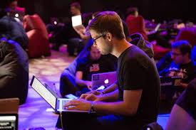

History
TechCon was first held in 2001 in Silicon Valley, initially envisioned as a small gathering of tech enthusiasts and industry professionals. The inaugural event focused on emerging technologies and provided a platform for networking and knowledge exchange.

Mission
TechCon is more than just a technology conference; it embodies a set of core goals and principles aimed at fostering innovation, collaboration, and education within the tech industry. This section delves into the driving forces behind TechCon and how they shape the conference's mission and activities.
Past Speakers
Dr.Smith is a leading expert in artificial intelligence and machine learning. As the Chief Scientist at TechInnovate Labs, she has spearheaded several groundbreaking projects in AI that have transformed industries ranging from healthcare to finance

Lucy Bran is a prominent cybersecurity expert and the founder of SecureNet Solutions. With a career dedicated to protecting digital infrastructure, Raj has been instrumental in developing advanced threat detection systems.